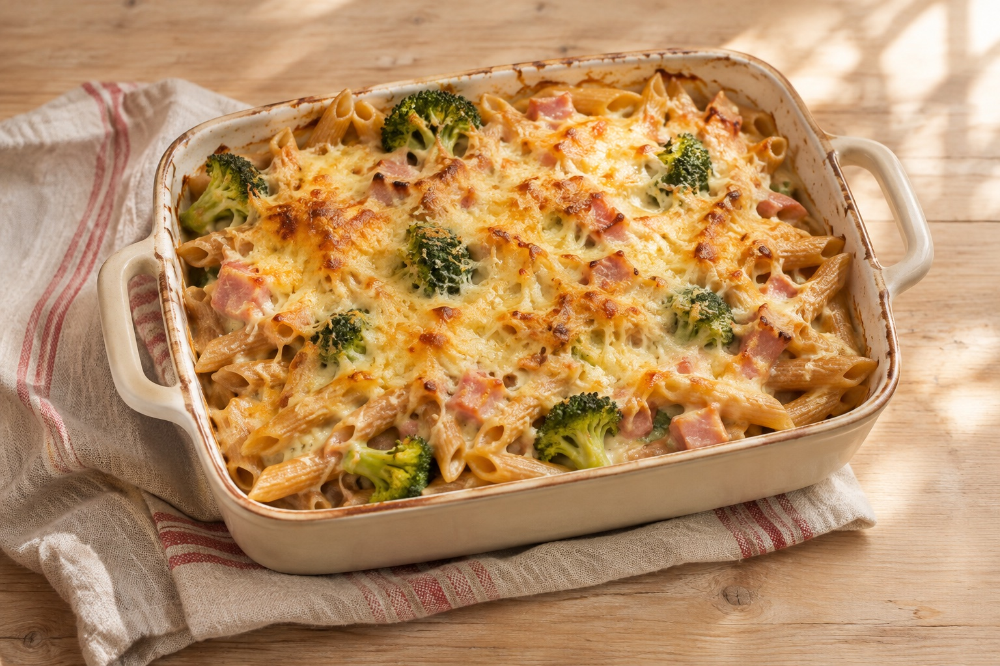

Vendredi · Menu validé · 9–15 novembre 2026
Gratin de pâtes complètes au brocoli, jambon et comté

Image photoréaliste générée par IA.
Calories et prix estimés, prix non vérifiés en magasin.
Ingrédients
- 160 g de pâtes complètes crues
- 400 g de brocoli
- 100 g de jambon blanc
- 80 g de comté râpé
- 100 ml de crème légère
- 150 ml de lait
- 1 gousse d’ail
- Sel, poivre, muscade facultative
Matériel
Four à chaleur tournante, casserole, passoire, plat à gratin
Préparation pas à pas
- Préchauffer le four à 200 °C en chaleur tournante.
- Cuire les pâtes 2 minutes de moins que la durée indiquée sur le paquet. Couper le brocoli en petites fleurettes et les cuire 5 minutes à l’eau bouillante.
- Égoutter les pâtes et le brocoli. Couper le jambon en dés.
- Mélanger dans un plat à gratin les pâtes, le brocoli, le jambon, l’ail haché, la crème et le lait. Assaisonner et parsemer de comté.
- Enfourner environ 20 minutes jusqu’à ce que le gratin soit doré et bien chaud.
Cuisson estimée : environ 10 minutes pour les pâtes et le brocoli cuits en parallèle, puis 20 minutes au four. Temps total : environ 45 minutes.
Astuce
Préparez et pesez les ingrédients avant de commencer. Les temps sont indicatifs : adaptez-les à la taille des morceaux et à votre matériel.